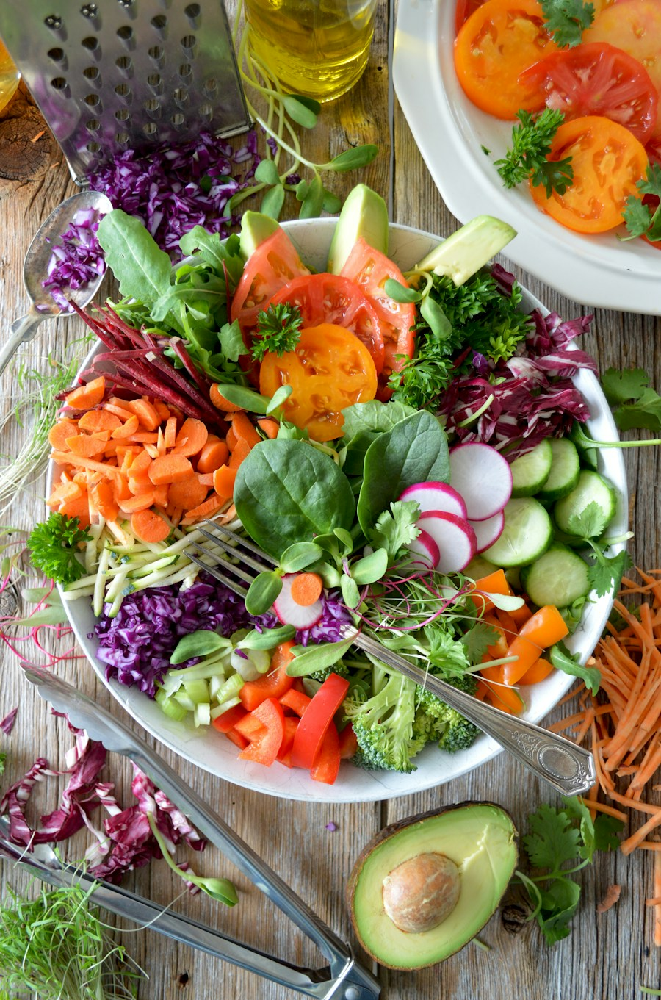

FRESH THINKING, EVERY DAY
Good food.
Better decisions.
A fridge that gets you. Save your ingredients, find your next meal, and make every bite count.

Fresh ideas. Less waste.A KITCHEN FOR EVERYONE
Different people. Different plates.
USE IT. DON’T LOSE IT.
Inside your fridge
LowGoodVery goodLow items have higher priority to use next
MADE FOR YOUR PROFILE
Something good is on the menu.
Nutrition estimates are calculated from the listed ingredient weights. Weigh rice and lentils dry; other ingredients use edible weights before cooking. These are meal ideas, not a complete daily meal plan.
RESTOCK AND RECOGNIZE
Shopping & memory
Review what you’re out of and see which foods the fridge remembers.
MISSING FROM THE FRIDGE
To buy
Combines foods taken out and frequent foods that are missing.
Copy it into a note or message you can open on your phone.
USAGE OVER 30 DAYS
Recurring foods
Two or more take-outs make a food frequent. Frequent entries remember company and weight for next time.
PROJECT WALKTHROUGH
How FART AI works
Follow one ingredient from the camera to Babatunda’s meal and grocery list. The large text option helps make the demo easier to read.
- 01
INPUT
Log food
Type the details, search the catalogue, scan a package label or photograph the food.
- 02
AI METHOD
Identify and rank
Read package text with OCR, or suggest a fruit, vegetable or dish from a photo. Confirm the food, then rank it by date, preference, nutrition and prep time.
- 03
OUTPUT
Take food out
Match the removed food to a recipe and calculate its macros for the weight entered.
- 04
MEMORY
Restock and learn
Remove the food from the fridge, add it to the shopping list and update its usage count.
EXPLAINABLE SCORE
Four parts, 100 points
- Expiry · 40
- Subtract 40 on the reminder date, reducing the deduction by 6 per day remaining, down to 0.
- Preference · 20
- 20 for a preferred group. Any food gives 10 to all foods.
- Nutrition · 20
- Fibre earns 4 points per gram per 100 g. Protein earns 2. Cap either goal at 20 points.
- Prep time · 20
- 20 for 10 min or less, 10 for 11 to 20 min, and 0 for longer.
Start at 100 and subtract the four parts above. Lower scores mean higher priority to use next; more days remaining means more points for the same food. Scores of 0–30 are red (Low), 31–55 are yellow (Good), and 56–100 are green (Very good). Items with the lowest scores appear first.
DATA AND LIMITS
Where the values come from
The catalogue includes the USDA FoodData Central SR Legacy records. Choose the entry that matches the ingredient and its preparation. Each macro is multiplied by the food’s weight in grams and divided by 100.
The app uses the date from the label when provided. For covered foods with a missing date, it calculates a reminder using the stored-since date and a published refrigerator storage window. This date is a planning estimate for properly stored food. Follow the package’s storage directions.
SUCCESSFUL TRIAL RUN
From camera to shopping list
Reset the sample fridge before presenting. Use the sample label image or show the printed label to a camera.
- Add manually. Type a name, company and weight. Enter a date or use a sourced estimate when available.
- Scan in a banana. Hold the demo label in view or choose Try sample label. Its name, company, 120 g and date appear automatically in the fridge.
- Take it out. Select Take out on Banana, or scan the same label with Take out selected. Check the recipe, protein, fibre, carbs and fat. The banana disappears from the fridge.
- Check shopping and memory. Banana appears on To buy and gains a use in Recurring foods. Copy the list. Advance 30 days to show how the memory review clears inactive and one-off entries.
PYTHON INPUT PATH
One list of dictionaries
The Python example prompts for the four fields and appends a dictionary to the inventory. The browser prototype displays the same fields.
inventory = []
food = {
"name": input("Food name: "),
"company": input("Company or brand: "),
"quantity_g": float(input("Weight in grams: ")),
"expiration_date": input("Date (YYYY-MM-DD): "),
}
inventory.append(food)